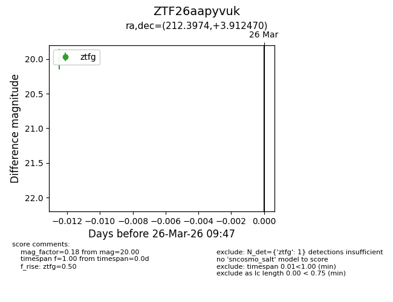
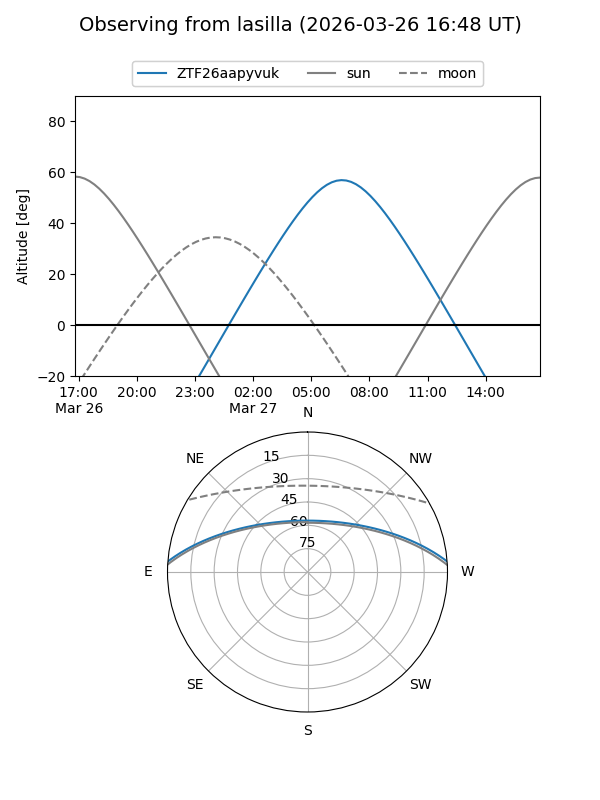
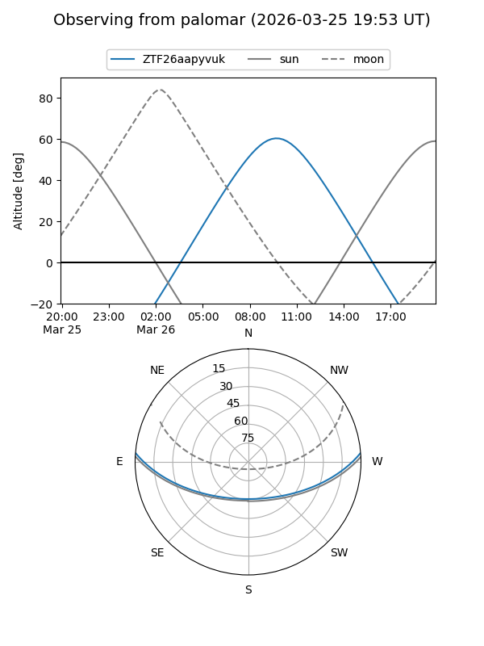

ZTF26aapyvuk
Target ZTF26aapyvuk at 2026-03-26 09:49
Aliases and brokers:
FINK: link
Lasair: link
ALeRCE: link
alt names
ZTF26aapyvuk (ztf,fink_ztf)
Coordinates:
equatorial (ra, dec) = 212.3974,+3.91247
equatorial (HMS+DMS) = 14:09:35.38,+03:54:44.89
galactic (l, b) = (345.1292,+60.21563)
Flags:
Photometry:
last ztfg=20.00
1 ztfg detections
Lightcurve

Visibility


Additional plots